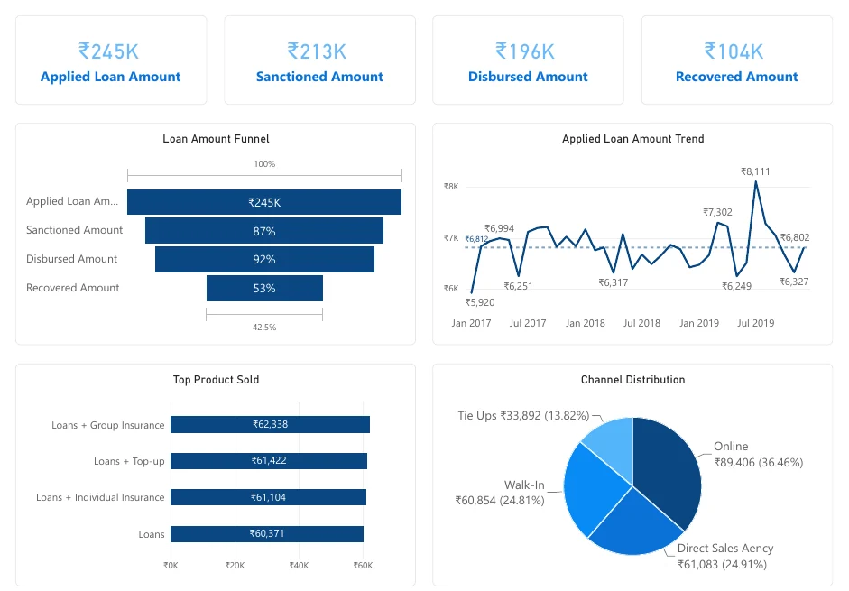
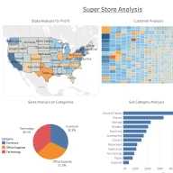

01 Finance / Power BI
Loan portfolio analysis
I built this report to follow requested funding through approval and disbursement, and to track recoveries separately from new lending.
Read the case study
Analytics engineering Toronto, ON
Finance & supply chain analytics
I build the datasets behind finance and operations metrics, then use SQL, Power BI, and Tableau to show where the numbers changed and what to check next.
01 Finance / Power BI
I built this report to follow requested funding through approval and disbursement, and to track recoveries separately from new lending.
Read the case study
02 Retail / Tableau
Furniture sold well in Sample Superstore, but Tables lost money. I’d start with product mix, discounts, and state results.
Tableau workbook
03 Supply chain / SQL
A single order can span several rows. This example rolls line items up to the order level before comparing late shipment rates by region and shipping mode.
Read the SQLBrowse the project index on GitHub.